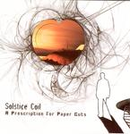

| Artist: | Solstice Coil |
| Title: | A Prescription For Paper Cuts |
| Label: | self produced |
| Length(s): | 51 minutes |
| Year(s) of release: | 2005 |
| Month of review: | [03/2006] |
| 1) | Photosensitivity | 4.13 |
| 2) | Caveat Emptor | 1.33 |
| 3) | Selling Smoke | 9.09 |
| 4) | Deep Child | 6.15 |
| 5) | Even Poets Die | 7.18 |
| 6) | Accidents | 6.01 |
| 7) | Enjoy The Ride | 5.31 |
| 8) | Anyone Can Be | 6.45 |
| 9) | Brilliance | 4.48 |
Tension is also to be felt on Selling Smoke, immediately from the opening guitar lines. The guitar is doubled, a wailing one comes to accompany the repetitive riff. In between we get question and answer singing (a bit Gentle Giantish), and the guitars can be quite heavy here. In the doubled vocal parts, the music is more ethereal, but the doubled vocals are that strong. From my first listens I remembered especially similarities to Radiohead, but to my ears, these seem to have gone now. The band is certainly more symphonic, a bit like Riverside, but more adventurous without giving up on good songs and melodies. The song has a powerful finale, with the vocalist going the direction of Muse, but with excellent backing vocals. Although I am reminded of the Belgian band The Same, the reference is likely to obscure to help anyone (sorry for that).
Deep Child is a bit more proggy still, largely due to the strong presence of organ. Later, the music tends to adventurous progmetal. Again, the band shows excellence on this song with some powerful, climactic progrock that does not owe much to anything, although can spot family ressemblances to the likes of Porcupine Tree and Muse.
Even Poets Die is a somber and relatively quiet tune, with subtle guitar work and the bass line repetitive and plainly audible in the other ear. Then the power sets in a bit more, and we obtain a noisy sound, a bit in the vein of the likes of American alternative rock. In between, the quieter passages are strongly atmospheric and slighly reminiscent of Radiohead. For the progpeople: we do get a keyboard solo towards the end, lined by some strong rolls on the drums. For the finale, the guitar goes all out, but we end in (s)low style.
Accidents opens lightly with repetitive play and a tragic vocalist. The first few minutes are relatively atsmopheric, but then the music is infused with energy, for instance by the drummer, and some female vocals that set in wailingly. Afterwards, the guitar takes the fore, repetitively, while the keyboard sound is really dated (but in a good way). The vocals are raw and aggressive here. Again, an excellent piece of work, rich in tension.
Enjoy The Ride is a moodier, softer track with tragic vocals. Again, I am reminded of The Same, because of the relatively alternative approach, and the use of many different voices in the vocals. The piano is the dominant element here, on this relatively quiet, but not easy track. At the end, the band takes a ninety degree turn, and the sax, drums and guitars make sure we have a pounding finale. Again, I am reminded of VDGG.
Anyone Can Be has the combination of acoustic guitars and a flamenco style, wailing electric guitar part. A sharp piece of music, somewhat psychedelic overall, with very proggy keyboard solo's. Brilliance is a stately piece, with rolling drums, and rather vague vocals. The song is among the softer ones, slightly ethereal even with vibes and some nice cello to establish the ambiance.